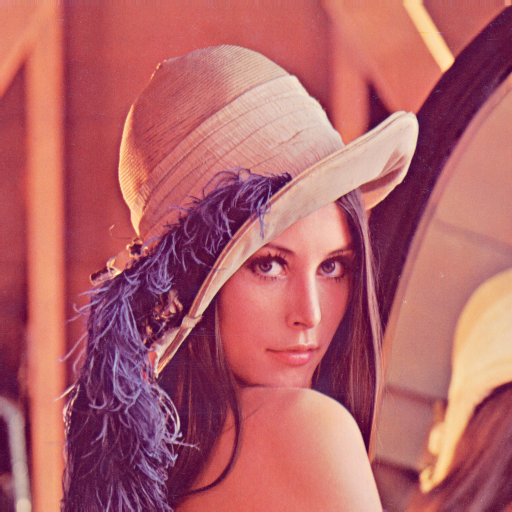
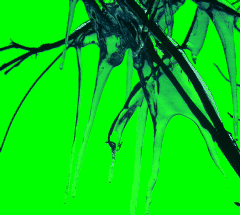
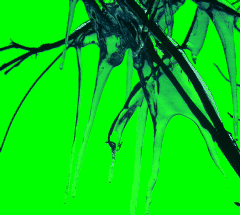
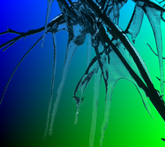

Getting Started With FreeImage¶ ↑
Below are various recipes to get you up and running with FreeImage as quickly as possible. The example images tcan be found in the test/images directory. For more general information about FreeImage, including installation instructions, please refer to README.rdoc.
Loading An Image¶ ↑
The first step in using FreeImage is to load an image. FreeImage can load images from files, strings or IO streams. The simplest way to do this is via the FreeImage::Bitmap.open method:
image = FreeImage::Bitmap.open('images/lena.tiff') image = FreeImage::Bitmap.open(io_object) image = FreeImage::Bitmap.open(FreeImage::Memory.new(string))
The open method also takes two additional optional parameters, format and flags, that provide greater control over opening images if needed.
The open method works similary to File.open, meaning you can also pass it a block.
FreeImage::Bitmap.open('images/lena.png') do |image|
... do some stuff..
end
Once the block completes, the image will be automatically freed for you. If you don't pass block, then the image will be freed by Ruby's Garbage Collector once it goes out of scope. For more information about memory management, refer to the readme [README.rdoc].

Saving An Image¶ ↑
Now let's say you want to save the image to :png format. This is done via the FreeImage::Bitmap#save method. The save method takes a destination, which can be a files, strings or IO stream, and an image format.
image.save('images/lena.png', :png)
Creating a Thumbnail¶ ↑
Next, let's assume our application needs to show a list of thumbnails for the images
it stores. This can be done using the make_thumbnail[rdoc-ref:FreeImage::Modify.make_thumbnail]
method in the Modify module.
thumbnail = image.make_thumbnail(100) thumbnail.save('images/lena_thumbnail.png', :png)

Putting a Border Around a Thumbnail¶ ↑
Once we have created a thumbnail, let's outline it with a red border. There are various approaches to do doing this. In the first approach, we'll use the FreeImage::Modify#enlarge_canvas method.
# Border size border = 4 # Specify the color as red color = FreeImage::RGBQuad.create(255, 0, 0) # Add 4 pixel red border around the thumbnail thumbnail_border = thumbnail.enlarge_canvas(border, border, border, border, color) thumbnail_border.save('images/lena_thumbnail_border_1.png', :png)
In the second approach, let's create a image with a red background and then paste it on top of our thumbnail:
# Create a red image that is the same size as the thumbnail red_image = FreeImage::Bitmap.create(thumbnail.width, thumbnail.height, thumbnail.bits_per_pixel) red_image_new.fill_background(color) # Now copy a subimage from the thumbnail that is 2 borders less wide and tall subimage = thumbnail.copy(border, border, thumbnail.width - border, thumbnail.height - border) # Now paste the subimage into the red image. Specify an alpha over 255 # to disable alpha blending red_image.paste(subimage, border, border, 300) red_image.save('images/test1.png', :png) thumbnail_border.save('images/lena_thumbnail_border_2.png', :png)

Resampling An Image¶ ↑
If you need additional control over how an image is resampled, use the FreeImage::Modify#rescale method, which lets you specify a filtering algorithm. To see how each filter works, let's scale up the thumbnail by 400%.
thumbnail = FreeImage::Bitmap.open('images/lena_thumbnail.png') FreeImage.enum_type(:filter).symbols.each do |filter| rescaled = thumbnail.rescale(thumbnail.width * 4, thumbnail.height * 4, filter) rescaled.save("images/lena_rescale_#{filter.to_s}.png", :png) end


Flipping An Image¶ ↑
The Transform modules lets you flip or rotate an image. Let's say you want to flip your image horizontally:
image.flip_horizontal image.save('images/lena_flipped.png', :png)

Rotating An Image¶ ↑
Next, let's rotate an image. Two methods are provide, FreeImage::Transforms#rotate and FreeImage::Transforms#rotate_ex. The rotate method is simpler to use:
image = FreeImage::Bitmap.open('images/lena.png', :png) # Rotate the image 45 degrees using white as the background fill color color = FreeImage::RGBQuad.create(255, 255, 255, 0) rotated = image.rotate(45, color) rotated.save("images/lena_rotate_45.png", :png)

Notice that the image size and geometry has changed? Thus, the rotate function is best for rotating and image 90, 180 or 270 degrees.
Let's now rotate the image using the rotate_ex method while using a mask:
rotated = image.rotate_ex(45, 0, 0, image.width/2, image.height/2, true) rotated.save("images/lena_rotate_ex_45_masked.png", :png)
And now let's rotate the image without a mask, so data is filled in using a mirroring algorithm:
rotated = image.rotate_ex(45, 0, 0, image.width/2, image.height/2, false) rotated.save("images/lena_rotate_ex_45_mirrored.png", :png)


Last, lets rotate the image around the top left corner:
rotated = image.rotate_ex(45, 0, 0, 0, 0, true) rotated.save("images/lena_rotate_ex_45_top_left.png", :png)

Compositing An Image¶ ↑
FreeImage also lets you composite an image with a background color or another image. Here is an example of compositing an image with the color green.
image = FreeImage::Bitmap.open('images/sample.png') color = FreeImage::RGBQuad.create(0, 255, 0, 0) composite = image.composite_with_color(color) composite.save("images/sample_composite_color.png", :png)
 

And here is an example of compositing two images together:
image = FreeImage::Bitmap.open(image_path('sample.png')) background = FreeImage::Bitmap.open(image_path('gradient.png')) # Need to make sure the background image is the same size background = background.rescale(image.width, image.height, :box) composite = image.composite(background)

Manipulating An Image¶ ↑
FreeImage also allows you to directly access each pixel in an image. As an example, let's create an image that has a gradient from blue in the top left corner to green in the bottom right
image = FreeImage::Bitmap.create(300, 300, 24) color = FreeImage::RGBQuad.new image.width.times do |x| image.height.times do |y| color[:green] = (x.to_f/image.width) * 255 color[:blue] = (y.to_f/image.height) * 255 image.set_pixel_color(x, y, color) end end image.save('images/gradient.png', :png)

You can use a similar technique as another solution to drawing a border around a thumbnail as discussed above.
Using Scanlines¶ ↑
Scanlines provide low level access to image data.
The only lower-level access is working with the actual raw bytes, which you can do via the FreeeImage::Bitmap#bytes method, but its not recommended.
A scanline represents one row of image data, starting from the bottom. Let's go back to our example above of drawing a red border around a thumbnail.
# Helper method def set_to_red(color) color[:red] = 255 color[:green] = 0 color[:blue] = 0 end # Create a thumbnail image = FreeImage::Bitmap.open('images/lena.png') thumbnail = image.make_thumbnail(100) # Draw bottom border 4 pixels tall (0..3).each do |index| scanline = thumbnail.scanline(index) scanline.each do |color| set_to_red(color) end end # Draw top border 4 pixels tall ((thumbnail.height - 5)..(thumbnail.height - 1)).each do |index| scanline = thumbnail.scanline(index) scanline.each do |color| set_to_red(color) end end # We could skip top and bottom 4 scanlines since # already drew them. thumbnail.height.each do |index| scanline = thumbnail.scanline(index) # Draw left and right borders 4 pixels wide (0..4).each do |index| set_to_red(scanline[index]) end ((thumbnail.width - 5)..(thumbnail.width - 1)).each do |index| set_to_red(scanline[index]) end end thumbnail.save("images/lena_thumbnail_border_scanline.png", :png)